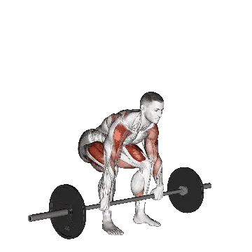

Clean high pull
Clean high pull menampilkan berat rata-rata dan standar kekuatan sebagai referensi untuk kategori seluruh tubuh. Otot utama: Deltoid, Trapezius, Quadriceps.

Berat rata-rata: Menengah
Acuan untuk level menengah.
Pria
189 lb
Wanita
119 lb
Berat rata-rata Clean high pull [1RM]
| Level | ||
|---|---|---|
| Dasar | 68 lb | 66 lb |
| Pemula | 119 lb | 90 lb |
| Menengah | 189 lb | 119 lb |
| Mahir | 274 lb | 153 lb |
| Pro | 370 lb | 188 lb |
Catatan: standar ini adalah estimasi 1RM berdasarkan lifter rata-rata. Berat badan, usia, dan faktor pribadi lain dapat memengaruhi hasil. Lihat data detail pada tabel di bawah.
Standar kekuatan Clean high pull (lb)
Pria berdasarkan berat badan (lb) [1RM]
| Berat badan | Dasar | Pemula | Menengah | Mahir | Pro |
|---|---|---|---|---|---|
| 110 | 29 | 61 | 108 | 168 | 237 |
| 120 | 36 | 71 | 121 | 184 | 256 |
| 130 | 43 | 81 | 133 | 199 | 274 |
| 140 | 50 | 90 | 145 | 214 | 291 |
| 150 | 57 | 99 | 157 | 228 | 307 |
| 160 | 63 | 108 | 168 | 241 | 323 |
| 170 | 70 | 117 | 179 | 254 | 338 |
| 180 | 77 | 126 | 190 | 267 | 353 |
| 190 | 84 | 134 | 200 | 280 | 367 |
| 200 | 90 | 143 | 211 | 291 | 381 |
| 210 | 97 | 151 | 220 | 303 | 394 |
| 220 | 103 | 159 | 230 | 314 | 407 |
| 230 | 110 | 167 | 239 | 325 | 419 |
| 240 | 116 | 174 | 249 | 336 | 432 |
| 250 | 122 | 182 | 258 | 346 | 443 |
| 260 | 128 | 189 | 266 | 356 | 455 |
| 270 | 134 | 196 | 275 | 366 | 466 |
| 280 | 140 | 204 | 283 | 376 | 477 |
| 290 | 146 | 210 | 291 | 385 | 487 |
| 300 | 151 | 217 | 299 | 395 | 498 |
| 310 | 157 | 224 | 307 | 404 | 508 |
Pria berdasarkan usia [1RM]
| Usia | Dasar | Pemula | Menengah | Mahir | Pro |
|---|---|---|---|---|---|
| 15 | 58 | 102 | 161 | 233 | 315 |
| 20 | 66 | 116 | 184 | 267 | 361 |
| 25 | 68 | 119 | 189 | 274 | 370 |
| 30 | 68 | 119 | 189 | 274 | 370 |
| 35 | 68 | 119 | 189 | 274 | 370 |
| 40 | 68 | 119 | 189 | 274 | 370 |
| 45 | 64 | 113 | 179 | 260 | 351 |
| 50 | 60 | 106 | 168 | 244 | 330 |
| 55 | 56 | 98 | 155 | 226 | 305 |
| 60 | 51 | 90 | 142 | 206 | 278 |
| 65 | 46 | 81 | 128 | 186 | 252 |
| 70 | 41 | 73 | 115 | 167 | 226 |
| 75 | 37 | 65 | 103 | 149 | 202 |
| 80 | 33 | 58 | 92 | 134 | 180 |
| 85 | 30 | 52 | 82 | 120 | 162 |
| 90 | 27 | 47 | 74 | 108 | 146 |
Wanita berdasarkan berat badan (lb) [1RM]
| Berat badan | Dasar | Pemula | Menengah | Mahir | Pro |
|---|---|---|---|---|---|
| 90 | 47 | 66 | 90 | 118 | 147 |
| 100 | 52 | 72 | 97 | 125 | 155 |
| 110 | 56 | 77 | 103 | 132 | 163 |
| 120 | 60 | 82 | 108 | 138 | 170 |
| 130 | 64 | 87 | 113 | 144 | 177 |
| 140 | 68 | 91 | 119 | 150 | 183 |
| 150 | 72 | 95 | 123 | 155 | 189 |
| 160 | 75 | 99 | 128 | 160 | 194 |
| 170 | 79 | 103 | 132 | 165 | 200 |
| 180 | 82 | 107 | 136 | 170 | 205 |
| 190 | 85 | 110 | 140 | 174 | 210 |
| 200 | 88 | 114 | 144 | 178 | 214 |
| 210 | 91 | 117 | 148 | 183 | 219 |
| 220 | 94 | 120 | 152 | 187 | 223 |
| 230 | 96 | 123 | 155 | 190 | 228 |
| 240 | 99 | 126 | 158 | 194 | 232 |
| 250 | 102 | 129 | 162 | 198 | 236 |
| 260 | 104 | 132 | 165 | 201 | 239 |
Wanita berdasarkan usia [1RM]
| Usia | Dasar | Pemula | Menengah | Mahir | Pro |
|---|---|---|---|---|---|
| 15 | 56 | 77 | 102 | 130 | 160 |
| 20 | 64 | 88 | 116 | 149 | 183 |
| 25 | 66 | 90 | 119 | 153 | 188 |
| 30 | 66 | 90 | 119 | 153 | 188 |
| 35 | 66 | 90 | 119 | 153 | 188 |
| 40 | 66 | 90 | 119 | 153 | 188 |
| 45 | 63 | 86 | 113 | 145 | 178 |
| 50 | 59 | 80 | 106 | 136 | 167 |
| 55 | 54 | 74 | 98 | 126 | 155 |
| 60 | 50 | 68 | 90 | 115 | 141 |
| 65 | 45 | 61 | 81 | 104 | 128 |
| 70 | 40 | 55 | 73 | 93 | 115 |
| 75 | 36 | 49 | 65 | 83 | 102 |
| 80 | 32 | 44 | 58 | 74 | 92 |
| 85 | 29 | 39 | 52 | 67 | 82 |
| 90 | 26 | 35 | 47 | 60 | 74 |
Catatan: barbell standar di gym umumnya berbobot 44 lb.
Otot yang dilatih
| Grup | Otot |
|---|---|
| Otot utama | Deltoid, Trapezius, Quadriceps, Hamstring, Gluteus maximus |
| Otot pendukung | Latissimus dorsi, Biseps brachii, Triseps brachii |
| Otot stabilisator | Rectus abdominis, Oblique eksternal, Erector spinae |
| Grip | Fleksor lengan bawah |
Catat dan analisis di aplikasi Shiba
Lihat beban, repetisi, dan perkembangan di satu tempat.
Cara membaca tabel
| Level | Deskripsi | Distribusi |
|---|---|---|
| Dasar | Menguasai teknik yang benar dan berlatih konsisten minimal 1 bulan. | Bawah 5% |
| Pemula | Berlatih konsisten minimal 6 bulan. | Atas 80% |
| Menengah | Berlatih konsisten lebih dari 2 tahun. | Atas 50% |
| Mahir | Berlatih terencana lebih dari 5 tahun. | Atas 20% |
| Pro | Menekuni latihan ini secara khusus lebih dari 5 tahun. | Atas 5% |
Latihan lainnya
Seluruh tubuh
Snatch deadlift
Seluruh tubuh
Clean pull
Seluruh tubuh
Paused deadlift
Seluruh tubuh
Single-leg deadlift
Seluruh tubuh
Muscle snatch
Seluruh tubuh
Jefferson deadlift
Seluruh tubuh
Snatch pull
Seluruh tubuh
Wall ball
Seluruh tubuh
Zercher deadlift
Seluruh tubuh
Single-leg dumbbell deadlift
Seluruh tubuh / Dumbbell
Dumbbell clean and press
Seluruh tubuh / Dumbbell
Ring muscle-up
Seluruh tubuh / Bodyweight